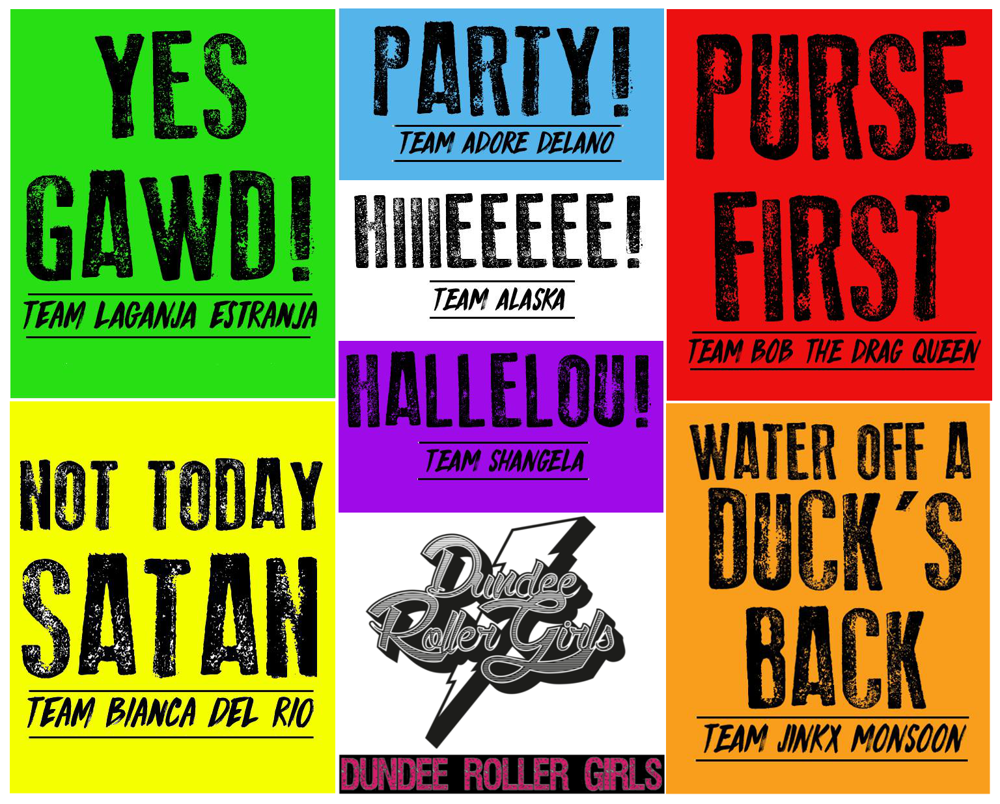
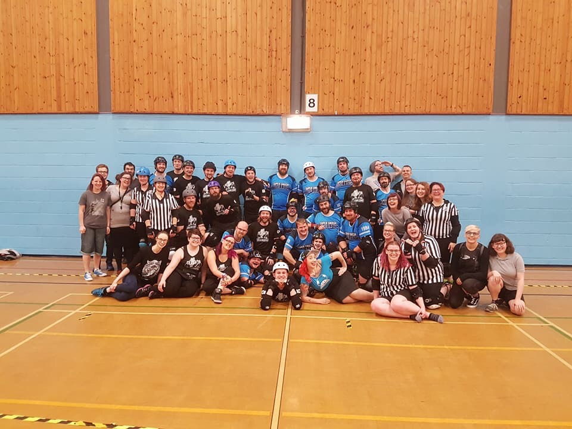
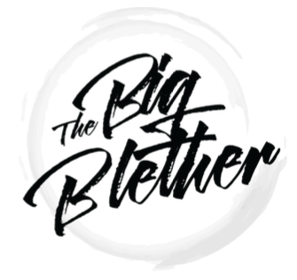
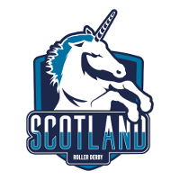

Non-US/Canadian Derby Roundup: 21st/22nd October Edition
Predictions of bouts are from FTS, if possible, and from our own SRD Rank where FTS cannot make predictions (for example: Latin America, or non-MRDA men’s bouts). (SRDRank also has recent WFTDA rankings, including the 31st June ranking, as well as SRDRank, and allows you to make predictions from them.)
If we’ve missed you from our roundup, please let us know! [Or add yourselves to FTS and/or Derbylisting]
Scotland
This weekend, there's all the derby on in Scotland:
- Inverness: Inverness City Roller Derby are hosting a bootcamp run by the famous Quadzilla, open to mins-passed skaters (and almost-mins-passed if they're only missing the 27/5). [EVENT]
- (Sat+Sun) Kirkwall, Orkney: new UKRDA members Orkney ViQueens are hosting a two-day bootcamp run by Power of Scotland's Nuke and Team Scotland's Udder Mayhem! [EVENT]
- Dundee: Dundee Roller Girls host the Dundee Sevens Extravaganza, a seven-team double-elimination Derby Sevens tournament with a RuPaul's Drag Race theme [EVENT]
- Edinburgh: Auld Reekie Roller Girls host a C team game, as their ASTROs face off against Nottingham's Hellfire Harlots B [FTS][EVENT]
UK
With British Champs over for the year, there's still quite a bit of derby:
- Friday, Ipswich, England: Suffolk Roller Derby are holding a recruitment / intake evening [EVENT]
- Belfast, Northern Ireland: Belfast Roller Derby host Kent Rollergirls [FTS][EVENT]
- London, England: London Rockin' Rollers are celebrating 10 years of existence by holding a triple-header [EVENT]
- Wreck-league exhibition bout
- LRR A versus Liverpool Roller Birds [FTS]
- Old-School Rules Game (featuring LRR veterans returning)
- Oxford, England: it's possible that there's an Oxford Men's Roller Derby scrimmage against Suffolk Men's - but it's not listed on Facebook [FTS]
- Swansea, Wales: Swansea City Roller Derby are holding a double-header to launch their new Junior team: [EVENT]
- Swansea Juniors mixed team game
- Swansea City Roller Derby versus London Rollergirls C (Batter C Power) [FTS]
- Sunday, Flint, Wales: North Wales Roller Derby are holding the next of their free taster sessions (for the duration of October), for all genders interested in joining [EVENT]
- Sunday, Blackpool, England: Blackpool Roller Derby are holding an open day / fresh meat recruitment [EVENT]
- Sunday, Swindon, England: Wiltshire Roller Derby host the "Ultimate alliance" men's derby tournament - where each team is a fusion of two men's leagues, allowing the smaller leagues to get bout experience. [EVENT]
- Wiltshire Men's Derby + Borderland Brawlers [Rutland]
- Bridgend Roller Derby + Portsmouth Scurvy Dogs
- Milton Keynes (Quads of War) + Cornwall Roller Derby
- Bristol Roller Derby Men + Surry Jammerwockies
Europe
In Europe, there's several tournaments, double headers and other bouts going on:
- Tallinn, Estonia: Tartu Roller Derby and Riga Roller Derby are combining forces to play their first mixed-scrimmage, against St Petersburg's White Night Furies B, the Ingria Rollers. [EVENT]
- Helsinki, Finland: Kallio Rolling Rainbow host the next leg of the 2017/8 Suomi Cup, with a triple-header + special national teams expo: [FTS Tournament][EVENT]
- Kouvola versus Tampere
- Helsinki Roller Derby B versus Kallio Rolling Rainbow B
- Dirty River B (Turku) versus Oulu B
- Exhibition: Team Finland versus Team Finland Men's [FTS]
- Bordeaux, France: Roller Derby Club Bordeaux host Vienna (B)easts [FTS][EVENT]
- Lyon, France: Lyon Association Roller Derby are hosting a party to welcome back everyone from break? [EVENT]
- Montpellier, France: DCCLM host a double header [EVENT]
- Nantes, France: Nantes Derby Girls are 7 years old, and celebrating with a triple header [EVENT]
- Coed / Open To All Mixed game: Nantes v Unnamed
- Nantes B (Les Divines Machines) vs Les Pétroleuses (Caen B) [FTS]
- Nantes A (Les Duchesses) v Unnamed Bitches (French exhibition team)
- Hamburg, Germany: St Pauli Roller Derby are hosting The Awesome Kick-ass Cup 2017, a 4 team round-robin tournament featuring [FTS Tournament][EVENT]
- Hit Girls (Stuttgart Valley Rollergirlz)
- Brussels Derby Pixies A
- Leopard Avengers (Roller Derby Caen)
- Harbor Girls Hamburg (St Pauli)
- Kassel, Germany: Kassel Roller Derby's Bashlorettes are taking on Sucker Punch Roller Derby of Nürnberg in a German Bundesliga Div 3 bout [FTS Tournament][EVENT]
- Koblenz, Germany: Chaos Crushers Coblenz are hosting a double header [EVENT]
- a mixed team versus Frankfurt's Roller Grrl Gang
- Rhein Main Syndikat (Koblenz + Mainz) vs. Rat Pack Regensburg
- Leipzig, Germany: Roller Derby Leipzig are holding a roller derby open day and trial practice for recruitment [EVENT]
- Torino, Italy: Bloody Wheels Roller Derby Torino host an intermediate-level bootcamp with coaches Bouffonne and Miss Gadin of Equipé de France! [EVENT]
- Groningen, Netherlands: Roller Derby Groningen host a coed/open to all game, as their Thunder & Lightning face off against Odense's O-Town Roller Derby Squid Squad [FTS?][EVENT]
- Oslo, Norway: Oslo Roller Derby host a beginner/intermediate bootcamp run by Furrrocious from Amsterdam Roller Derby [EVENT]
- Poznan, Poland: Bad to the Bone Roller Derby are holding their 4th Birthday party, and celebrating by taking on a mixed team of skaters from Breslau Rebels and Vratislavia MadChix! [EVENT]
- Barcelona, Spain: Barcelona Roller Derby B are hosting a double-header [EVENT]
- Ingles de Acero (Barcelona) versus As Brigantias Roller Derby (Coruña) [FTS]
- Ingles de Acero versus Las Palmas Roller Derby [FTS]
- Norrköping, Sweden: Norrköping Roller Derby are hosting a double-header, as part of the Swedish National Tournament (Seriespel) [EVENT]
- Blockwork Orange (Norrköping B) versus Kunglig Uppväxt (mixed: Royal Brigade [Stockholm], Jackdaw City [Uppsala] and Växjö)
- Sundsvall Demolition Rollers / Sun City Rollers (Karlstad) versus Stockholm C-Stars [first division 2 game in Seriespel]
- Sunday, Graz, Austria: Dust City Rollers are hosting Innsbruck's Fearless Bruisers - in the first game for Dust City in the new Austria Roller Derby Championships! [FTS Tournament][EVENT]
- Sunday, Mannheim, Germany: the Delta Quads are hosting the start of their NSO training course [EVENT]
- Sunday, Vicenza, Italy: The Anguanas are running a fresh-meat recruitment/try-out day [EVENT]
- Sunday, Stavanger, Norway: Oil City Rollers are running a trip to Tugenes, finishing with coffee and cake :) [EVENT]
- Sunday, Barcelona, Spain: Barcelona Rocknrollaz invite everyone to their regular open scrimmage [EVENT]
Pacific
In Australia and New Zealand there's a bit more skating, and even more tournaments:
- Friday (as we write this), Maitland, NSW, Australia: Maitland Roller Derby are hosting a coed/open to all scrim [EVENT]
- Friday, Gladstone, QLD, Australia: Gladstone PCYC are hosting a Halloween Roller Disco. [EVENT]
- Brisbane, QLD, Australia: Brisbane hosts Tasmania Mens Roller Derby (in an event which was very hard to find) for two bouts [EVENT]
- Cairns, QLD, Australia: Reef City Rollergirls are hosting an "old-school throwback game", featuring their current roster and returnees from their history playing under an older ruleset [EVENT]
- Rockhampton, QLD, Australia: Rocky Roller Derby host Knocktobertest 2017, a 6 team knockout tournament, followed by a coed/open to all finishing bout. [EVENT]
Competing are:
- Rocky Roller Derby (Rockhampton)
- Brisbane City Rollers
- North Brisbane Rollers
- Towns Villains Roller Derby (Townsville)
- Guild of Roller Derby (SE QLD)
- Mackay City Roller Maidens
- Gladstone Haulstars
- Albany, WA, Australia: Albany Roller Derby League are hosting a quiz night [EVENT]
- Perth, WA, Australia: Western Australia Roller Derby League host Victoria's South Sea Sirens for a bout [FTS][EVENT]
- Manawau, New Zealand: Swamp City Roller Derby host Northland Nightmares of Whangarei, in a New Zealand Top 10 fixture [FTS Tournament][EVENT]
- Sunday, Perth, WA, Australia: Western Australia Roller Derby continue their South Sea Sirens collaboration with an open scrimmage [EVENT]
- Monday, Camp Zama, Japan: Zama Killa Katanas (part of Tokyo Rollergirls) are recruiting, with their open fresh-meat practice session [EVENT]
Latin America
In Latin America, Argentina has another tournament + some birthdays:
- Friday, San José, Costa Rica: Dark Side Roller Girls are hosting their 3rd Birthday Party, with food, drinks and general celebration [EVENT]
- Cancùn, Mexico: Reinas Rojas Roller Derby host the next fixtures in the Mexican National Tournament (Torneo Nacional AMRD 2017), division 2. [FTS Tournament][EVENT] Competing are:
- Vipers Roller Derby (Tijuana)
- Reinas Rojas (Cancún)
- Fugaz Roller Derby (CDMX/Toluca)
- Monterrey Roller Derby
- Mendoza, Argentina: The ScarcastiCats are hosting a coed/open to all scrimmage to celebrate their 3rd Birthday [EVENT]
- Sunday, Parque Chucabuco, Buenos Aires, Argentina: Seleccion Argentina de Roller Derby, the Argentinian National Team, are running a bootcamp to raise funds to attend RDWC2018. [EVENT]
Africa and Middle East
- Sunday, Abu Dhabi: Abu Dhabi Roller Derby are hosting the last night of their recruitment period, for anyone who wants to start Roller Derby [EVENT]
Non-US/Canadian Derby Roundup: 14/15th October Edition
Predictions of bouts are from FTS, if possible, and from our own SRD Rank where FTS cannot make predictions (for example: Latin America, or non-MRDA men’s bouts). (SRDRank also has recent WFTDA rankings, including the 31st June ranking, as well as SRDRank, and allows you to make predictions from them.)
If we’ve missed you from our roundup, please let us know! [Or add yourselves to FTS and/or Derbylisting]
Scotland
This weekend, there's only one thing on in Scotland itself:
- Inverness: Inverness City Roller Derby run the 3rd of their "Get Your Skates On" free sessions. Anyone interested in knowing more about skating, and Roller Derby, can sign up. [EVENT]
UK
With British Champs over for the year, there's a quieter space in the UK derby as everyone rushes to the first event in our list here:
- Friday to Sunday, Cwmbran, Wales: The Men's Roller Derby Championships are outside North America for the first time. [EVENT][FTS Tournament][LiveStream]
- Vancouver Murder (Vancouver, X)
- St. Louis Gatekeepers (St Louis, MO)
- San Diego Aftershocks (San Diego, CA)
- New York Shock Exchange (New York, NY)
- Bridgetown Menace (Portland, OR)
- Philadelphia Hooligans (Philadelphia, PA)
- Puget Sound Outcasts (Puget Sound, WA)
- Austin Anarchy (Austin, TX)
- Roller Derby Toulouse (Toulouse, France)
- Manchester Roller Derby: NWO
- Southern Discomfort (London)
- Sunday, Liverpool, England: Liverpool Roller Birds host a screening of "Revolutions", the documentary about the story of roller derby in Ireland over the 4 years from the 2011 Roller Derby World Cup [EVENT]
Europe
In Europe, there's several tournaments, double headers and other bouts going on:
- Antwerp, Belgium: One Love Roller Dolls host a double (triple?) header of the B teams [EVENT]
- Oulu, Finland: Oulu Roller Derby host a double header versus Luleå [EVENT]
- Grenoble, France: the Cannibal Marmots host a double header: [EVENT]
- Lille, France: Roller Derby Lille hosts STRONGER THINGS, a two-day European tournament featuring: [FTS Tournament][EVENT]
- Roller Derby Toulouse B (Blocka Nostra)
- Portsmouth Roller Wenches
- Amsterdam Roller Derby A
- Switchblade RollerGrrrls (Lille)
- Zürich City RollerGirlz
- Vienna Roller Derby
- Darmstadt, Germany: the Riot Rollers host a double header, the first bout of which is a Bundesliga Div 2 bout: [EVENT]
- Riot Rollers v RockKArollers Karlsruhe (Bundesliga D 2) [FTS Tournament]
- South German Men's Roller Derby ( ) and Friends v Systers of Mayhem + Vagine Regime [Mixed / Coed / Open bout]
- Dublin, Ireland: Dublin Roller Derby host a double header, with home teams first [EVENT]:
- Fuppin Baxtards v Eoin McShoves [home teams]
- Dublin A versus Bristol Roller Derby A [FTS]
- Vicenza, Italy: Roller Derby Vicenza host an European double header, as [EVENT]:
- Utrecht, Netherlands: Dom City Dolls host a double header, with [EVENT]
- Dom City Dolls A versus The World
- Dom City Dolls B play Hard Breaking Dolls (Prague) [FTS]
- Oslo, Norway: Oslo Roller Derby host a B-teams bout against Gothenburg Roller Derby [FTS][EVENT]
- Gdansk, Poland: 3City Piranhas Roller Derby are recruiting with the start of their autumn open training on Saturdays. Those interested in derby are encourage to come along [EVENT]
- Angered, Gothenburg, Sweden: the West Sweden Roller Derby Association [Västsvenska Roller Derby-Sällskapet] hosts a triple-header event, introducing the newest team in the region, Killer Wheel Rollers of Gothenburg. [EVENT]
- Gothenburg, Sweden: Dock City Rollers host the afterparty for the above event [EVENT]
- Sunday, Antwerp, Belgium: One Love Roller Dolls follow up their derby extravaganza on the Saturday with their Fresh Meat recruitment event [EVENT]
- Sunday, Jyväskylä, Finland: Jyväskylä Roller Derby are hosting an open skate, allowing those interested in derby to try out the kit, meet the skaters and see a scrim [EVENT]
- Sunday, Avignon, France: Roller Derby Avignon are hosting a double header, as [EVENT]:
- Sunday, Épinal, France: Reaper's Crew host a game against the Molly Hatchets of Pontarlier [EVENT][FTS]
- Monday, Ljubljana, Solvenia: Roller Derby Ljubljana are opening their training for recruitment, with attendees getting to see a demonstration scrim, plus try out the kit [EVENT]
Pacific
In Australia and New Zealand there's a bit more skating, and even more tournaments:
- Friday, Mackay, QLD, Australia: Mackay City Roller Maidens are getting into the halloween spirit running their very own haunted house experience for those wanting a good scare. [EVENT]
- Adelaide, SA, Australia: Light City Derby are holding their home teams final, as the Galactic Guardians face the Regimental Rollers for the trophy. [EVENT]
- Canberra, ACT, Australia: Canberra Roller Derby League hold the 6th game in their home teams series, as Black 'n' Blue Belles play Surly Griffins for their place in the final [EVENT]
- Wauchope, NSW, Australia: Port Macquarie Roller Derby League are holding a coed/open to all cherry popper bout. [EVENT]
- Sydney, NSW, Australia: Sydney Roller Derby League are 10 years old, and are celebrating by bringing back their original seven home teams for a knock-out tournament [EVENT]
- Wellington, New Zealand: Richter City Roller Derby host the 2017 Quake, Battle & Roll tournament, the first ever International tournament in NZ. [Live Stream][EVENT][FTS Tournament]
- Northern Brisbane Roller Derby [Brisbane, Australia]
- Sun State Roller Girls B (Killer Bees) [Brisbane, Australia]
- Auckland Roller Derby
- Dead End Derby [Christchurch]
- Dunedin Derby
- Richter City A [Wellington]
- Whakatāne Roller Derby
Latin America
In Latin America, Argentina has another tournament, and there's celebrations in Chile:
- Friday to Sunday, Curitiba, Brasil: the 6th Brasileirão de Roller Derby, the big Brazilian derby tournament hosted by the Blue Jay Rollers, is on, featuring [EVENT]
- Bootcamp
- Tournament: [FTS Tournament][Streaming on the Facebook event page]
- Gray City Rebels (São Paulo)
- Iron Ladies (Blumenau)
- Sugar Loathe (Rio de Janeiro)
- Blue Jay Rollers (Curitiba)
- Thunder Rats (São Paulo)
- Meat Machine (Campo Grande)
- Featuring: Roller Derby Brasil versus Argentina's N.E.R.D.!
- Córdoba, Argentina: Hiedras Roller Derby host the 2017 Torneo CordoBAzo, [EVENT][FTS Tournament]
- Hiedras Roller Derby (Córdoba)
- Sailor City Rollers (Buenos Aires)
- Coquena's Fighter RDM (Mens, Jujuy)
- Dirty Fucking Dolls (Buenos Aires)
- Herejes Roller Derby (San Luis)
- Wonderclan Roller Derby Masculino (Mens, Buenos Aires)
- Metropolitan Roller Derby (Santiago, Chile)
- Survival Crew Roller Derby (Mens, Córdoba)
- Córdoba, Argentina: Asistencia Medica Argentina Roller Derby are hosting a series of classes in First Aid for Roller Derby during CordoBAzo. [EVENT]
- Valdivia, Chile: Roller Derby Valdivia celebrate their 2nd birthday with a triangular tournament of mash-up coed/open teams, with guests from: Leo Diosas Volcanicas Seltzer, Corvus Roller Derby Temuco, Chillanrolleros Derby Club, Quimeras Roller Derby Neuquen and Colusión Austral [EVENT]
- Sunday, Viña del Mar, Chile: Tacones Banditos Roller Derby are celebrating Roller Derby in Valparaíso staging a meetup and a triple header with: [EVENT]
- Late addition: Sunday, Mexico City, Mexico: Liga All Blacks Roller Derby's Malinches will be taking on Toluca's Roller Devils on Sunday. [FTS] [No event but a Poster]
- Late notice: Armenia, Colombia: Makiabellas Roller Derby host the first ever Men's Derby Tournament in Colombia [EVENT]
Africa and Middle East
- We're not aware of anything in this region, for this weekend.
Doonhame Roller Derby show collaboration is the way to victory.
Whilst one of the prevailing narratives in Roller Derby is that the sport is the "fastest growing female sport in the world", it's worth noting that even when this was unarguably true, growth is always unevenly distributed. In order to keep growing, a league needs enough skaters to form good bouting team, in order to get those games which build visibility and retain ambitious players. If you're a smaller team, this can be challenging!

Dumfriesshire's Doonhame Roller Derby have found that collaborating with other leagues is a profitable way to enable more derby, more of the time, and help grow both themselves and their collaborators.
The more long-term collaboration is with fellow-West-of-Scotland league, Ayrshire Roller Derby - the resulting "Doonshire" train together and have even played a closed bout, with perhaps more fixtures in the future. Doonhame's Suze MacBruise told us, "Ayrshire Roller Derby are in a very similar situation to us: they had a big shake up when they lost their regular training hall, moving them to actually training in Kilmarnock rather than Ayr. We find that, with smaller towns like ourselves and Ayrshire, that we almost get up to full team numbers, and then when the slightest thing happens we're pushed back to training again."
But it's another collaboration which is providing a bigger event, as Doonhame are joining forces with Durham City Rolling Angels to take over Newcastle's Walker Activity Dome for a special Triple Header event for Halloween. Whilst Durham might not be the obvious collaboration, Suze told us "we also have always got on really well with DCRA, and myself and [Durham's] Clairely Psycho hatched this plan to get a game together... we got far too excited and now it has turned out to be this marvellous Halloween event, focusing on players stuck in the 'twilight zone', who've played too many games for a cherry popper, but are not quite confident enough to play advanced."
As well as an opening Cherry Popper bout, the remaining bouts will both be previously-unseen collaborations:
- Doonhame and Durham forming the "Doom Angels" to take on an exhibition team of low/intermediate skaters
- Newcastle's Tyne and Fear joining with Teeside Skate Invaders (as the "Tyne Invaders") to take on an advanced, open/coed exhibition team.
Durham and Doonhame's Halloween Triple Scrim is on Saturday October 28th , with tickets for skaters who wish to play in any of the games available from EventBrite (link). The same link also allows spectators to get a ticket to see all the lovely games.
The event is also in need of lovely NSOs and Referees in order to support all three bouts: if anyone is interested in joining the Officiating team, they should look here.
The event Facebook page is: https://www.facebook.com/events/111674759544178/ for updates.
Non-US/Canadian Derby Roundup: 7/8th October Edition
Back after a 2 week break for our holidays, we’re bringing you another roundup of the upcoming Roller Derby this weekend from across the world. As always, we’re using Flat Track Stats for much of this information – for regions with less good coverage, we also do a bit of intensive searching using a tool which scans the Facebook events of Roller Derby leagues known to Derby Listing.
Predictions of bouts are from FTS, if possible, and from our own SRD Rank where FTS cannot make predictions (for example: Latin America, or non-MRDA men’s bouts). (SRDRank also has recent WFTDA rankings, including the 31st June ranking, as well as SRDRank, and allows you to make predictions from them.)
If we’ve missed you from our roundup, please let us know! [Or add yourselves to FTS and/or Derbylisting]
Scotland
This weekend Scotland has a busy schedule, although mostly, with one very big event in Dundee:
- Aberdeen: Granite City Roller Derby host their intake and taster session for anyone interested in joining [EVENT]
- Dundee: Glasgow Men's Roller Derby host the legendary St Louis Gatekeepers for a bootcamp at the highest level of men's derby [EVENT]
- Edinburgh: Auld Reekie Roller Girls host the first ever instance of "The Big Blether" - a pan-Scottish derby networking event, bringing together all Scottish leagues + other reps to discuss the sport in the nation.
- Sunday, Musselburgh: Lothian Derby Dolls host their intake and recruitment day, with a taster session for anyone interested in joining the sport [EVENT]
UK
With British Champs over for the year (almost...), there's still space for a tournament or two in the UK:
- Cambridge, England: Cambridge Rollerbillies host a Derby Sevens B-teams tournament, featuring 6 exciting English B-teams competing in 21 minute games all day. [EVENT] Competing are:
- Cambridge's Punt Rockers
- Central City B (Birmingham)
- Rainy City's Bet Lynch Mob (Oldham)
- Rebellion's Rebellion Uprising (Bedford)
- Norfolk Roller Derby's Black Shucks
- Portsmouth Roller Wenches B
- Leeds, England: Leeds Roller Derby celebrate the 10th birthday of Roller Derby In Leeds by bringing back the Great Yorkshire Showdown tournament. Six teams compete in 30 minute initial games, with the top two playing it out for the championship! [EVENT] Competing are:
- Leeds Roller Derby
- Auld Reekie Roller Derby C [ASTROs] (Edinburgh)
- Mansfield Roller Derby
- Bruising Banditas Roller Derby (Halifax)
- Hallam Hellcats Roller Derby (Sheffield)
- Birmingham Blitz Dames B [Bomb Squad]
- Leicester, England: Roller Derby Leicester are hosting a double-header, [EVENT]
- RDL A versus Oxford Wheels of Gory [FTS]
- RDL B versus "specially formed challenge team"
- London, England: Croydon Roller Derby are hosting a WFTDA-sanctioned triple header round-robin, with the below teams, playing [FTS 1 2 3] [EVENT]
- Croydon A
- Royal Windsor Roller Girls
- Limerick Roller Derby
- London, England: London Rollergirls host a pair of events this weekend:
- Newcastle, England: Newcastle Roller Girls host a double header (and play away the day after - see below), against Scotland as [EVENT]
- Newcastle A play Glasgow Roller Derby A [FTS]
- Newcastle C play Dundee Roller Derby B [FTS]
- Swansea, Wales: Reaper Roller Derby are hosting an all ages roller skate event fundraiser [EVENT]
- Sunday, Ellesmere Port, England: Cheshire Hellcats are hosting their annual fundraising scrimmage for Chester Pride - this year, a two-scrim event (all-gender, and female-identifying) at intermediate/advanced level. [EVENT]
- Sunday, London, England: it looks like London Rockin' Rollers are hosting Namur for a closed bout whilst they're over in the UK [FTS]
- Sunday, Liverpool, England: Liverpool Roller Birds are hosting a double header: [EVENT]
- Liverpool B v Wirral B [FTS]
- Liverpool A v Newcastle B [FTS Tournament] (rescheduled British Champs Tier 2 game)
- Sunday, Queensferry, Wales: North Wales Roller Derby are hosting their taster session and recruitment event for both their men's and women's teams [EVENT]
- Sunday, Sheffield, England: Sheffield Steel Rollergirls are hosting a recruitment event! [EVENT]
- Monday, Loughborough, England: Loughborough Roller Derby's Sox Pistols are hosting a recruitment / learn to play derby event [EVENT]
- (Wednesday, Wales: Glasgow Men's Roller Derby play Bridgetown Menace - part of a host of men's bouts starting around the MRDA Champs next weekend)
Europe
In Europe, the next tournament series is already starting in Sweden, as the first games of the Eliteserien are played, and there are several German Bundesliga bouts as well. Outside of that, there's a huge amount of other derby going on, especially for Namur... :
- Floreffe, Namur, Belgium: Namur Roller Girls host a triple header, with men's league, the Glorious Basterds: [EVENT]
- Aarhus, Denmark: Aarhus Derby Danes host a double header event [EVENT], as
- Kouvola, Finland: Kouvola Roller Derby host a double header, with [EVENT]
- Tampere, Finland: Tampere Roller Derby B host Joensuu Roller Derby A [FTS][EVENT]
- Avignon, France: Avignon's Rabbit Skulls (W) and Warren Track Fighters (M) are opening their doors to new recruits [EVENT]
- Limoges, France: Limoges, and Limoges Roller Derby, host the first FFRS training bootcamp for Officials (beginner + intermediate). [EVENT]
- Marseilles, France: the City of Marseilles is hosting a "Ca bouge dans ton quartier !" ("Move in your neighbourhood!") event, to get young people active, and Marseilles Roller Derby is there as part of it [EVENT]
- Dresden, Germany: Roller Derby Dresden host a double header [EVENT]
- Dresden versus Cologne in a Bundesliga Div 1 bout [FTS Tournament]
- Dresden B versus the Prussian Fat Cats (Potsdam) [FTS]
- Frankfurt, Germany: Bembel Town Rollergirls also host a Bundesliga bout, with a Division 2 fixture against Mannheim's Delta Quads [FTS Tournament][EVENT]
- The Hague, Netherlands: The Parliament of Pain are hosting a double header, [EVENT]
- The Hague, Netherlands: Parliament of Pain are also recruiting this weekend - prospective skaters are invited to attend the above double header (with experienced skaters at hand to explain), and then attend the fresh meet event itself on Sunday [EVENT]
- Leiria, Portugal: the Black Rebel Roller Derby Club of Leiria is hosting a two-day bootcamp, with coaching by Barcelona + Team Spain's Maggie Love [EVENT]
- (Sat+Sun) Luleå, Sweden: Luleå Roller Derby host the very start of the 2017/8 Swedish national tournament, with the first games of the Elite series [FTS Tournament][EVENT]
- Sat: Norrköping versus Gothenburg
- Sat: Luleå versus Stockholm B
- Sun: Norrköping versus Luleå
- Sun: Gothenburg versus Stockholm B
- Sunday, Braine-le-Comte, Belgium: Team Belgium Roller Derby hosts an exciting triple-header, as the hosts, Team Italy and Team Netherlands play each other in a round-robin series [FTS 1,2,3] [EVENT]
- Sunday, Annecy, France: Annecy's Brütales Deluxe, together with Grenoble's Cannibal Marmots, host an open training session - for skaters of all levels - which is also a recruitment event for potential skaters. [EVENT]
- Sunday, La Rochelle, France: Roller Derby La Rochelle host a double header, as their Cheeky Dolls face a "mysterious team", followed by a men's bout, as a fusion of the "Dark Heroes" and Lorient's Hero's Quad against Rennes' Bonhommes [EVENT]
- Sunday, Sainte-Catherine-lês-Arras, France: Roller Derby Arras and Men's Roller Derby Arras co-host a double-header [EVENT]:
- Sunday, Berlin, Germany: Berlin Rollergirls host a double-header, as Berlin play Hamburg's Harbor Girls (a B team and friends roster), and Bear City Roller Derby play a Bundesliga Division 1 fixture against Ruhrpott [FTS Tournament][EVENT]
Pacific
In Australia and New Zealand there's a bit more skating, and even more tournaments:
- Friday, Sydney, NSW, Australia: Inner West Roller Derby League are celebrating their freshies graduation, and the end of the year, with a "Glow" themed bout [EVENT]
- Adelaide, SA, Australia: Adelaide Roller Derby host the "Four on the Floor" round-robin tournament, as the following teams compete [FTS Tournament][EVENT]
- Vice City Rollers (Canberra)
- West Coast Evils (Perth)
- Sun State Swarm (Sun State: Brisbane)
- Adeladies (...Adelaide)
- Canberra, Australia: we have records of bouts planned between Varsity Roller Derby League and Sydney City SMASH... but nothing public. [FTS] Edited to add - we have found the event here: [EVENT]
- Auckland, New Zealand: Auckland Roller Derby League host a New Zealand Top 10 bout, as they face Rotorua's Sulphur City Steam Rollers [FTS Tournament][EVENT]
- Tauranga, New Zealand: Mount Militia Derby Crew host a bout, their B team taking on the Taranaki Rumble Bees [FTS] [EVENT]
- Sunday, Coffs Harbour, NSW, Australia: Coffs Coast Derby (and Coffs Coast Juniors) are upping their recruitment with 1 month "discounted" trials of their fresh meat course, for adults [EVENT] and Juniors [EVENT]
- Sunday, Newcastle, NSW, Australia: Newcastle Junior Roller Derby are recruiting too, with a signup event and Bowling session for bonding after [EVENT]
- Sunday, Hobart, Tasmania, Australia: Hobart Junior Roller Derby are holding their AGM [EVENT]
- Sunday, Waipapa, New Zealand: Peowhairangi Roller Derby League are hosting a free open session for anyone wanting to try roller derby [EVENT]
- Sunday, Camp Humphreys, South Korea: Osan Humphreys (OH!) Roller Derby, the only derby team in South Korea, host a Rocky Horror/Halloween themed derby invitational for anyone mins-passed who can make it. [EVENT]
- Monday, Cairns, QLD, Australia: Reef City Rollergirls are recruiting, with their sign-up event today [EVENT]
- Monday, Wagga Wagga, NSW, Australia: Wagga Derby Dolls are also recruiting, with the start of their 10 week programme [EVENT]
Latin America
In Latin America, things seem quieter (although we often find events here after the fact):
- Saturday, Buenos Aires, Argentina: WonderClan celebrate their 4th Birthday with a double-header, with teams not yet announced. [EVENT]
- Saturday, Buenos Aires, Argentina: Sailor City Rollers host another Bootcamp (towards raising funds to attend Cordobazo 2017) - their All-Stars running sessions on Defence (for blockers) and Jamming. [EVENT]
- Sunday, Bahia Blanca, Buenos Aires, Argentina: The Brujas Roller Girls are holding a Derby Bingo fundraiser [EVENT]
- Sunday, Buenos Aires, Argentina: 2x4 Roller Derby is hosting a double header, with mixed "B/C" level game, and "A/B" level coed/open game as a fundraiser to help their C team attend their first tournament in November [EVENT]
- LATE ADDITION (added to Facebook only on 6 October): Toluca, Mexico: Atómicas Roller Derby are holding a Team Green v Team Black bout, with both their experienced and new skaters on display. Recruitment also open for anyone enthused by the action. [EVENT]
Africa and Middle East
- Sunday, Abu Dhabi: Abu Dhabi Roller Derby are hosting a fresh meat / new skater night [EVENT]
Dundee Sevens Extravaganza!
On October 21st, Dundee Roller Girls will be showcasing all the charisma, uniqueness, nerve and talent roller derby has to offer by hosting their open to all: Sevens Extravaganza!
Seven teams consisting of only seven skaters will battle against each other in 21 minute games of high intensity roller derby! All in the hopes of being crowned the most sickening team of all!!This is the first time that DRG are bringing the thrills of a sevens tournament to Dundee, with no timeouts, no official reviews and only 7 skaters per team! What more could you want from a day of derby? How about 7 awesome RuPaul's Drag Race inspired team names with their very own catchphrases???
Team Laganja Estranja – YES GAWD! Team Adore Delano – PARTY! Team Shangela – HALLELOU! Team Alaska - HIIEEEEEE! Team Bianca Del Rio – Not Today Satan Team Bob the Drag Queen – Purse Furst Team Jinkx Monsoon – Water off a Ducks Back
DRG still have team applications open so don’t miss out! Apply here with your team of seven: Application for Full Seven
Not quite got a full team of seven? Don't worry Dundee have thought of that as well and are now accepting single skater applicants to skate in a mixed side: Application for Single Skaters
And if you think Dundee have left out the most on-the-nose team name you could think of: WELL THINK AGAIN! Team RuPaul has been left for the most important group of the whole day.... The Officials!!

Spectator tickets will also be available for your friends and family to come to this full day event at Dundee International Sports Complex (D.I.S.C) on Mains Loan. There will be a chance to buy Dundee's Merch (including the limited edition coveted Tie Dye shirts!!), a classic bake sale for all your daily cake consumption needs as well as a handful of local business to be announced as vendors, across DRG's Social Media in the upcoming weeks!
Will you come and stay? Or will you just Sashay Away?
Doors are open at 0930 with first whistle at 10am!! Tickets on the door: £6 Check out the event page for more details: Here
Granite City Brawlers make Derby History

 September has been an awfully exciting month for the Granite City Brawlers (GCB); they became the first Scottish league to achieve MRDA membership AND won the first MRDA sanctioned game to be held in Scotland (against Nottingham's Super Smash Brollers, 209 to 190). Pretty exciting stuff!
September has been an awfully exciting month for the Granite City Brawlers (GCB); they became the first Scottish league to achieve MRDA membership AND won the first MRDA sanctioned game to be held in Scotland (against Nottingham's Super Smash Brollers, 209 to 190). Pretty exciting stuff!
 I had a wee chat with GCB chairperson Pudz about the league application to MRDA and what this means for the future.
Can you tell me a little about the MRDA application process?
The application process involves playing 5 games with at least one of these against an MRDA opponent and 2 letters of recommendation from an MRDA league and an MRDA recognised official. There are a few other boxes to tick and then your application is sent to MRDA for review. Once reviewed the application is put to vote by MRDA leagues and officials to decide if you are to be admitted to membership.
What made GCB decide to become MRDA affiliated?
Over the past few years we have grown naturally as a league. Starting from scratch with getting skaters through mins up to having a bouting team playing at home. We set MRDA status as one of our goals at our AGM last year as it felt like the natural progression for the club and we are delighted to present this as a completed project at our upcoming AGM.
What does MRDA membership mean for the Brawlers? What changes can we expect? Fancy riders for game day?
This means the world to Brawlers, we have put our country on the map as the first league in Scotland to achieve this status. Hopefully this means we can play a wider range of teams as opponents look for sanctioned games for ranking and tournament purposes. [Plus] A bottle of rum in the changing room after games maybe 😉
Who is your dream MRDA opponent?, let's make it happen.
I'd personally love to play an Australian MRDA team like Sydney SMASH as I love the way they play derby. We'd also love to play in a tournament like MEC [Tyne and Fear's Men's European Cup] one day, that’s the dream!
Thanks Pudz!
So I'm sure you're wondering where you can watch Scotland’s premier MRDA league play. Well get your diary out and make sure you keep 25 November free for a cheeky home game. GCB will be hosting an International Double Header where GCB will take on Team Poland, and Power of Scotland will also take on Poland.
GCB will be playing an away game on 28 October too, more details shall be announced soon.
Granite City Brawlers are currently one of thirty clubs in Scotland competing for a Grassroots Giving Grant from Skipton Building Society. You can help them win by clicking the link
http://www.skiptongrg.co.uk/apply-for-funding/2017-shortlisted-groups/Scotland/granite-city-brawlers Congratulations GCB on making history!
The Big Blether: Scotland Together
It's often been commented that Scotland has seen some of the more dramatic growth (and changes) in Roller Derby, with respect to its population. Since the first league started in Glasgow in 2007, Roller Derby has spread across the Nation - but not always uniformly, or consistently. Whilst there's certainly a lot of Roller Derby in Scotland now - with 19 leagues in existence (by one count) now - communication and organisation across the community has not always been as good as it could be.
On October 7th, in Edinburgh's Charteris Centre, three people aim to change this. Auld Reekie Roller Girls' Crazylegs and (Steph) Skinner, and Glasgow Roller Derby's head referee Candy Moho, are organising what they hope will be the first of a regular series of gatherings of the Scottish Roller Derby Community in one place and one time.

The Big Blether, as it's now known, aims to bring together all of the extant leagues and clubs in Scotland, as well as others in the sport, in order to share and discuss the future and present of the sport. Every active league in Scotland has been invited to the event as part of the organisation process,
We talked to two-thirds of the Organisers - thrice Team Scotland skater, founding Roller Derby Nations Committee rep, and founding Auld Reekie Roller Girls member, Crazylegs; and long-standing Glasgow Roller Derby Head Referee and organiser of the Scottish Roller Derby Events Spreadsheet, Candy Moho.
Crazylegs was inspired to kickstart this idea at the last European Rollerderby Organisational Conference, as she told us. "I guess for me the inspiration came from EROC - I love attending that event, and I guess the more I go to events like that and attend sessions, and deliver talks, I kind of think, we've got such a compact community in Scotland - and I don't think we take advantage of it enough. Our league [ARRG] gets so much out of events like EROC in terms of knowledge and new ideas to refresh you. It's so much easier for us to get together in Scotland - the leagues in Australia might find it harder to all meet up, for example - but we're so close.
I chatted to Candy at the end of EROC, and she mentioned that she'd been thinking of something similar, so it was in my mind from then."
Candy, meanwhile, had a slightly different perspective. "My main focus was the Officials side, off of the back of a project I'd done for the Open Uni. And also being in the Event Organising Group, the Interleague Liasion group, a lot of the issues there - it just seemed it would be easier to get people in the same room to talk to each other!
One of the things I am planning to do at The Big Blether is to present the findings from my OU project, which focussed on Scottish Derby Officials - I've not had a chance to pass on the results of that to the community, and I thought this is the perfect forum to do it, and make the results public after. That took in feedback from Officials as well as skaters from leagues. A lot of the stuff from that is still very relevant, and it's relevant to UK officials as well."
Unlike EROC's speaker-centered sessions, The Big Blether is intended to foster a less hierarchical approach - each topic will have a "facilitator" to moderate, but will emphasise communication and discussion between peers, not a top-down dissemination of from on-high.
Topics on the agenda currently cover the spectrum of community concerns and interests, from best practice in Training, through the creation of better links for interleague support and with local communities, and how to move the sport on in terms of recognition on both local and National/International scales; however, in keeping with the design of the event, there are no topics which are out of bounds if attendees wish to discuss them.Speaking to the organisers, again, they each have their own favourite areas from the menu presented. For Crazylegs, a key topic is governance and organisation, on all scales.
"We want to cover topics like League Governance - so: the legalities of how you set up a league, how you structure a league, what works for different leagues, of different sizes.
I guess leading on from that you'd look at sports governance - as in governing bodies, as in the national teams, UKRDA, WFTDA [MRDA], just I think maybe putting a bit of information out there for everybody.
I think there's a lot of myths out there concerning the various bodies - but we also need to talk about what Scotland itself needs.
I know Stef's driving force for this comes from her job, she's a community sports officer, and she's been has been doing a lot of research around the growth of sport, how we can better use Sport Scotland, and have better links with them for funding and support. We were also discussing working on having clear pathways, to show people how they can get to where they want to go - if that's high level competition, or having fun - from where they are.
And I think training as well - what support setups different leagues need, if we feel that there needs to be more information out there about training and structures, and how to set things up from beginning to getting wherever your league or team wants to go."
Candy, with her other hat on, is most concerned with another topic. "On the Events side: getting a Scottish Tournament (doing another "Highland Fling", perhaps) but also the topic of if we need to look into a League structure - as they have in Germany and France. I think you tend to find that when you have that kind of structure, and people working well together, then you also drive the sport, and the level of competition as well. "But, most of all, the event is about everyone meeting up and building the community links that can make Scottish Derby stronger together. As Crazylegs notes, "having a relaxed chat to people that you don't know, but you've heard of their leagues - if you get that kind of face-to-face conversation with people you've only interacted with on social media, then you make better connections, and everyone learns something.
The venue's amazing, it's close to town, we'll get some nice stuff going on in the breaks to build connections - and we'll be providing a delicious lunch!"
The Charteris Centre can be found here on Google Maps. Sign up for leagues (who are already contacted) is for the 23rd September, with potential for other slots for non-league attendees after the initial numbers are known.
All questions can be sent to the event organisers at scottishderbyevent@gmail.com
The initial shortlist of topics is:
- Training: Creation of clear pathways and sharing best practice
- Sport recognition (Leagues, National/International Governing Bodies and National Teams)
- Club governance; sharing best practices / resources / contacts, league support.
- Scottish Events Scheduling: game scheduling, events, opportunities
- Partnership working, local communities
- Officiating: recruitment and retention, development pathways, national association
- Volunteering (development, pathways, recruitment, training)
Non-US/Canadian Derby Roundup: 16/17 September Edition
As is traditional, we’re bringing you another roundup of the upcoming Roller Derby this weekend from across the world. As always, we’re using Flat Track Stats for much of this information – for regions with less good coverage, we also do a bit of intensive searching using a tool which scans the Facebook events of Roller Derby leagues known to Derby Listing.
Predictions of bouts are from FTS, if possible, and from our own SRD Rank where FTS cannot make predictions (for example: Latin America, or non-MRDA men’s bouts). (SRDRank also has recent WFTDA rankings, including the 31st June ranking, as well as SRDRank, and allows you to make predictions from them.)
If we’ve missed you from our roundup, please let us know! [Or add yourselves to FTS and/or Derbylisting]
Scotland
This weekend Scotland has a busy schedule, at home and away:
- Glasgow: Glasgow Roller Derby are continuing their home teams season as the Bad Omens take on the T-Wrecks [EVENT]
- Inverness: Inverness City Roller Derby are holding the first of several try-roller-derby recruitment events [EVENT]
UK
British Champs hosts the final games of the season, as the Tier 2/3 Playoffs have arrived:
- Sat to Sun, Stoke-on-Trent sees the Women's Tier 2 [FTS] and Tier 3 [FTS] and Men's Tier 3 [FTS] compete for their promotion bouts to the next tier up [EVENT]
- Competing for promotion are:
- Tier 2 (promote to Tier 1): Rainy City Roller Derby B, Manchester Roller Derby, London Rockin' Rollers, and Swansea City Roller Derby
- Tier 3 (promote to Tier 2): Granite City Roller Derby, Auld Reekie Rollergirls B, Sheffield Steel Rollergirls, Leicestershire Dolly Rockit Rollers, Rebellion Roller Derby, Norfolk Brawds, North Devon Roller Derby, and Bath Roller Derby Girls.
- Tier 3 Men (promote to Tier 2 M): Teeside Skate Invaders, Men Behaving Derby, Oxford Men's Roller Derby, and Dorset Knobs.
- Competing for promotion are:
Outside of Champs there’s a few things going on:
- Friday, Bridgend, Wales: Bridgend Roller Derby are running their Beginners' Bootcamp recruitment/fresh meat series [EVENT]
- Friday, Ipswich, England: Suffolk Roller Derby are hosting an open mixed scrim [EVENT]
- Birmingham, England: Birmingham Blitz Dames are also recruiting [EVENT]
- Middlesbrough, England: Middlesbrough Roller Derby (recent British Champs Champions 2017) host a pre- and post-mins bootcamp, open to all genders [EVENT]
- Newcastle, England: Newcastle Juniors and Tyne & Fear Roller Derby cohost a triple header, with Tyne & Fear A [FTS] and B [FTS] taking on Scottish National Team Power of Scotland in successive bouts, headed by Newcastle Junior Roller Derby in a home teams bout [EVENT]
- Sunday, Brighton, England: B-Town Brawlers are hosting recruitment taster events for their open-to-all genders league [EVENT]
Europe
In Europe, there's a lot of recruitment again (especially in Finland), and some bouts too:
- Friday, Turku, Finland: Dirty River Roller Derby are recruiting, with an open skate event open to all genders [EVENT]
- Friday, Grenoble, France: The Cannibal Marmots are recruiting for the 2017/8 season, with an evening session [EVENT]
- Friday, Hamburg, Germany: Harbor Girls Hamburg / St Pauli Roller Derby are hosting a recruitment event, with the chance to try derby with kit provided [EVENT]
- Friday, Dublin, Ireland: Dublin Roller Derby invite you to see them in Dame Court and learn about the sport. [EVENT]
- Tournai, Belgium: the Rolling Zombie Dolls are recruiting, with kit provided for those who want to try it out [EVENT]
- Copenhagen, Denmark: Copenhagen Roller Derby host Dundee Roller Girls for a double-header, celebrating their 8th birthday! Bout 1, Copenhagen A play Dundee A [FTS], followed by Copenhagen B versus Dundee B [FTS] [EVENT]
- Sat and Sun: Dijon, France: [EVENT]
- Lille, France: Lille Roller Girls are holding a recruitment event, with demonstrations, and kit provided [EVENT]
- Tarbes, France: Roller Derby Tarbes' Full Metal Punkettes host a triple header! The hosts take on Narbonne's Head Hunters [FTS]; exhibition team the Unnamed Bitches play Vagine Regime France; and then Equipe de France Feminine play Team Spain Roller Derby [FTS]! [EVENT]
- Erfurt, Germany: Roller Derby Erfurt are hosting a roller disco, Saturday Skatefever [EVENT]
- Münster, Germany: The Zombie Rollergirlz are hosting another fresh meat / newbie try-derby event, with all kit provided if you sign up in advance. [EVENT]
- Potsdam, Germany: The Prussian Fat Cats are hosting a game against Berlin's Bear City Roller Derby C (Breaking Bears), with guest skaters on both sides making this non-regulation. [EVENT]
- Reykjavik, Iceland: Roller Derby Iceland's team Ragnarök play Faultline Derby Devilz (from Hollister, California) ! [FTS][EVENT]
- Sat to Sun: Madrid, Spain: Roller Derby Madrid host a bootcamp intended to support the development of Roller Derby in Spain itself [EVENT]
- Utrecht, Netherlands: Dom City Dolls host a double header, against Stuttgart Valley Roller Girls, A v A [FTS] and B v B [FTS] [EVENT]
- Sunday, Jyväskylä, Finland: Jyväskylä Roller Derby are recruiting, with an open skate, open also to those who want to referee etc [EVENT]
- Sunday, Mikkeli, Finland: Mikkeli Roller Derby are recruiting, with an open skate and beginners course following immediately after [EVENT]
- Sunday, Seinäjoki, Finland: Seinäjoki Roller Derby host their open skate, for anyone who wants to try things out (and join the sport) [EVENT]
- Sunday, Metz, France: The Graouwheels, Men and Metz Roller Derby league are recruiting for men to join their team. [EVENT]
- Sunday, Reims, France: Beastie Derby Girls' second event in their recruitment schedule - an open demonstration scrimmage [EVENT]
- Sunday, Hamburg, Germany: Harbour Girls Hamburg Roller Derby are hosting their second Bundesliga Division 1 bout, against Cologne's Graveyard Queens [FTS]. This event has free entry! [EVENT]
- Sunday, Dublin, Ireland: Dublin Roller Derby, fresh from Division 2 Playoffs, host their recruitment event for new skaters [EVENT]
- Monday, Reims, France: the final event in Beastie Derby Girls' recruitment series, the start of the new skater training [EVENT]
- Monday, Breda, Netherlands: Suck City Rock n Roller Dolls are hosting an open demonstration event to recruit new skaters or officials (sign up for their training course, which starts in October) [EVENT]
- Tuesday, Reykjavik, Iceland: Roller Derby Iceland are also recruiting, with a fresh meat training courses starting Tuesday and Thursday [EVENT]
Pacific
In Australia and New Zealand there's a bit more skating:
- Adelaide, Australia: Adelaide Roller Derby are turning 10 years old, and are holding a "Red and Black Ball" to celebrate! [EVENT]
- Brisbane, QLD, Australia: Northern Brisbane Rollers host Paradise City (of Gold Coast) for a bout, as the NBR Phoenix take on the visiting team [FTS][EVENT]
- Ipswich, QLD, Australia: Brisbane City Rollers host a double header - an all-gender "Package Black v Package Red" bout (in collaboration with The Scartel, Brisbane Men's); and then BCR Nasty Nancies versus (NSW's) Tweed Valley Roller's Vixens [FTS][EVENT]
- Newcastle, NSW, Australia: Newcastle Roller Derby League host a fundraiser evening with a focus on fun (and Housie, which is apparently Australian for Bingo) [EVENT]
- Nelson's Bay, New Zealand: The Sirens of Smash host Christchurch's Otautahi Roller Derby for a bout [FTS], proceeds of which go towards the Breast Cancer Foundation [EVENT]
- Sunday, Caloundra, QLD, Australia: the Coastal Assassins are hosting a Roller Disco with an 80s theme [EVENT]
- Sunday, Bairnsdale, VIC, Australia: Gippsland Lakes Roller Derby are recruiting via the start of their 12 week Quad Fit Skate Camp [EVENT]
- Sunday, Campbelltown, SA, Australia: Murder City Roller Girls co-host a double header home teams with the Rockabellas Roller Derby League (of Seaford/Gawler). Bout 1 sees Valkyrie Storm v the Dames of Hazard for MCRG; bout 2 sees the Rockabellas on track [EVENT]
- Sunday, Melbourne, VIC, Australia: West Side Derby Dollz are recruiting with a try derby/intake evening [EVENT]
- Sunday, Kingston, Tasmania: Convict City Roller Derby League host their open scrimmage (with two sessions for newer and more experienced skaters) [EVENT]
- Sunday, Westbury, Tasmania: Devil State Derby League host their regular Sunday Open Scrim [EVENT]
- Sunday, Dunedin, New Zealand: Dunedin Derby are hosting their yearly Quiz Night! [EVENT]
- Tuesday, Launceston, Tasmania: Devil Sate Derby League are recruiting, with an "Information Night" for potential skaters [EVENT]
Latin America
In Latin America!
- Friday to Saturday, Mar del Plata, Argentina: MD Queens are hosting an "American Fair", as a fundraiser and also a meet-and-greet. [EVENT]
- Monterrey, Mexico: Monterrey Roller Derby host Guadalajara's Minervas for a bout [FTS][EVENT]
- Recoleta, Santiago, Mexico: Adrenaline Roller Derby are hosting a fundraising food event, with standup comedy [EVENT]
- Sunday, La Plata, Buenos Aires, Argentina: La Dinastía Roller Derby host a double-header, with not every detail revealed - we know Buenos Aires' N.E.R.D. are attending, and that the bouts are a "C" and a "B" bout, but little else. [FTS when we know more][EVENT]
- Sunday, São Paulo, Brazil: Thunder Rats Derby Squad host Rio de Janeiro's Sugar Loathe Roller Derby for a friendly bout. [EVENT]
Africa and Middle East
- Abu Dhabi, UAE: Abu Dhabi Roller Derby are hosting a "fun skate night" for anyone who wants to come and have fun on skates. [EVENT]
Team Scotland Events: Fundraiser coming to a close!
While over on Facebook, we've been regularly sharing info about the preparations for the various National Teams heading for the two Roller Derby World Cups next year... we've been saving a blog post for the Scottish National teams, starting with Team Scotland Roller Derby.

In common with many of the teams heading for the 3rd Roller Derby World Cup in Trafford, England, Team Scotland are raising money to support their attendance. (Being a National Team has all the costs you would expect, from training venues, equipment, travel and accommodation.)
As a special consideration this time around, 20% of the funds raised by TS will be donated to the charity Mind, in support of mental health - and if you feel like you need a more tangible personal benefit for donating, all donations above £5 are eligible for Team Scotland branded merch, with donations above £75 enabling you to sponsor a specific Team Scotland Rostered Skater (who will wear a sponsors patch provided, during the World Cup).
You have just until the 11th to donate to the fundraiser, and help it reach its goal of just £2000, so please consider donating!
Donation link is here: https://www.crowdfunder.co.uk/team-scotland-roller-derby/
If you're interested in competing with Team Scotland, as well as supporting them, there's also the opportunity still to sign up as part of the mash-up team who will get to scrim against TS at their November training session.
Up in the Manhattan Works venue (Dundee Roller Girls' training venue), you will get to play with the best skaters that Scotland has to offer.
There's still time to sign up here:
https://www.facebook.com/events/111479986185051/?
Plus, if you'd like to help Team Scotland, rather than compete against them, applications are now open for the position of "Team Sports Therapist" attending the team for their training sessions, and competition, including the World Cup itself.
Apply here: https://docs.google.com/forms/d/e/1FAIpQLScwqegWr0F1-lAoO0hrXqrFLDx-fi1ueSwz7K9wZP4D3HugcA/viewform
Later on in the Year, Team Scotland will be making appearances at a few other events, so stay tuned to see how you can catch them on track before the World Cup!
Non-US/Canadian Derby Roundup: 9/10 September Edition
As is traditional, we’re bringing you another roundup of the upcoming Roller Derby this weekend from across the world. As always, we’re using Flat Track Stats for much of this information – for regions with less good coverage, we also do a bit of intensive searching using a tool which scans the Facebook events of Roller Derby leagues known to Derby Listing.
Predictions of bouts are from FTS, if possible, and from our own SRD Rank where FTS cannot make predictions (for example: Latin America, or non-MRDA men’s bouts). (SRDRank also has recent WFTDA rankings, including the 31st June ranking, as well as SRDRank, and allows you to make predictions from them.)
If we’ve missed you from our roundup, please let us know! [Or add yourselves to FTS and/or Derbylisting]
Scotland
This weekend Scotland has a quiet time:
- Dundee sees a weekend of British Roller Sports Federation Coaching courses, with the Level 1 course on Saturday, and the Level 2 on Sunday. [Link via Power of Scotland]
UK
British Champs is approaching the end of the season with only playoffs left to go. As such, there are no Champs bouts this weekend.
Outside of Champs there’s a few things going on:
- Blackpool, England: Blackpool Roller Derby host a double header, with Blackpool playing North Wales Roller Derby B (the Zom-Bs) [FTS], followed by Furness Firecrackers (of Barrow in Furness) against Leeds Roller Derby B[FTS] [EVENT]
- Liverpool, England: Liverpool Roller Birds are hosting an open scrimmage, with two scrim sessions, one against LRB A, and one against LRB B [EVENT]
- Swansea, Wales: Bridgend Roller Derby are hosting a double header - the hosts v Birmingham B [FTS], followed by a coed/Open to All scrim [EVENT]
- Sunday, Northwich, England: North Cheshire Victory Rollers are holding a recruitment event, explicitly for skaters, referees and NSOs [EVENT]
- Sunday, Mansfield, England: Mansfield Roller Derby are holding a recruitment event into their training course, again explicitly recruiting skaters, referees and NSOs. [EVENT]
- Monday, Southampton, England: Southampton City Rollers host a recruitment as the start of their fresh meat training course. [EVENT]
Europe
In Europe, there's a lot going on, but one very large thing to mention first:
- Friday to Sunday, Malmö, Sweden: the first ever WFTDA Division 1 Playoffs to be hosted outside the Americas, hosted by Malmö's Crime City Rollers - and also featuring Helsinki Roller Derby, Kallio Rolling Rainbow (also of Helsinki), Oldham's Rainy City Roller Derby, Stockholm Roller Derby, and, of course, London Rollergirls, rounding out the full set of European teams in Division 1 this year. The #1 seed for this Playoffs is New York's Gotham Girls Roller Derby [EVENT][WFTDA.TV]
- Friday, Kuopio, Finland: Kuopio Roller Derby are hosting a recuirtment/learn derby evening, with open training and practice, also allowing signup for their training course. [EVENT]
- Friday, Le Havre, France: Roller Derby Le Havre host an open evening for recruitment, with time for questions and demonstrations, and open practice [EVENT]
- Friday, Barcelona, Spain: Barcelona Roller Derby host their tryouts and recruitment session as well, with pre-registration required. [EVENT]
- Brussels, Belgium: Brussels Derby Pixies host a bout as part of "Relais pour la Vie" [Relay for Life], a fundraising event for cancer research, as their B team, Atomium Kittens, take on Namur B [FTS][EVENT]
- Uzès, France: Les Marto-Killeuses host a recruitment day [EVENT]
- Lens, France: Les Gueules Noires have a stall at the city "Village des Associations" (community associations fair) for information and recruitment [EVENT]
- Paris, France: La Boucherie de Paris are holding their next recruitment session [EVENT]
- The Hague, Netherlands: The Parliament of Pain have turned 6 recently, and are holding an open, open to all (all gender) scrimmage to celebrate - with random rule changes to make things interesting. [EVENT]
- Zaragoza, Spain: The Sicarias del Cierzo are holding an "initiation week", apparently starting on Saturday [EVENT]
- Sunday, Namur, Belgium: Namur Roller Girls are hosting a recruitment event [EVENT]
- Sunday, Joensuu, Finland: Joensuu Roller Derby hold the first of two "trial sessions" for those interested in joining the team (also open to NSOs and referees) [EVENT]
- Sunday, Harjavalta, Finland: Pori Rolling Brigade host an open skate for those interested in learning derby [EVENT]
- Sunday, Orléans, France: Orléans Roller Derby are also running a recruitment stall, and on-street skaters, as part of the city's "Rentreé en fête" for local associations. [EVENT]
- Sunday, Lille, France: Lille Roller Derby are also holding a recruitment evening, with multiple sessions. [EVENT]
- Sunday, Vence, France: Roller Derby Metz Club are, yes, holding a recruitment evening! [EVENT]
- Sunday, Marseille, France: Roller Derby Club Marseille have a stall at Marseille's equivalent of the "Festivals of Associations" in other French cities [EVENT]
- Sunday, Saintes, France: The Holy Terrors are... holding a recruitment evening [EVENT]
- Sunday, Dresden, Germany: Roller Derby Dresden's new skater training course begins, including for officials [EVENT]
- Sunday, Bilbao, Spain: Bilbo Roller Derby are holding their own recruitment evening [EVENT]
- Monday, Zaragoza, Spain: Sicarias de Cierzo's initiation week starts properly with a training session at the Skating rink [and then continues on Wednesday] [EVENT]
Pacific
In Australia and New Zealand there's a bit more skating, as there's two whole tournaments, and both Japan and China have more outreach events:
- Friday, Burleigh Heads, QLD, Australia: Paradise City Roller Derby hold a meet-and-greet for those interested in knowing more about Roller Derby. [EVENT]
- Friday, Gladstone, QLD, Australia: Gladstone PCYC host a Superhero themed Roller Disco [EVENT]
- Friday, Tokyo, Japan: every Friday, Kamikaze Badass Roller Derby hold their training session, and are always actively recruiting... [EVENT]
- Bateau Bay, Australia: The East Region Season Finals see teams from across New South Wales and the Australian Capital Territory compete for a showdown between the Northern and South/Central regions. [FTS Tournament when schedule published][EVENT]
Featuring:
- Port Macquarie's Breakwall Brawlers
- Western Sydney Rollers' Boutlaws (Penrith)
- Northern Beaches Roller Girls' Sirens
- Varsity Derby League's The Rogue Scholars (Canberra)
- Maitland Roller Derby's Junkyard Jerks
- Wollongong Illawarra Roller Derby's Steel City Derby Dolls
- Outcast Derby's Demons (Bateau Bay)
- Canberra Roller Derby's Vice City Betamax
- and a pair of elite teams made from MVPs.
- Hutt Valley, New Zealand: HuttValleyVanguard host New Zealand's first ever coed/OTA international roller derby tournament, Clash of Enormous Destruction! [FTS Tournament when schedule published][EVENT].
Featuring the following teams:
- Hutt Valley Vanguard
- Kingston City Roller Derby (Australia)
- West Coast Bombers (Whanganui)
- Team Crazy Legs (Nationwide, representing mental health issues)
- Richter City Roller Derby Mash up (Wellington)
- Prime Cuts (Nationwide, over 40's)
- Sunday, Osborne, Australia: Light City Derby host a home teams double header - a juniors bout with Lil Adelaide Rollers; and then Light City's Medic Mayhem versus Galactic Guardians [EVENT]
- Sunday, Muswellbrook, NSW, Australia: Muswellbrook and Districts Roller Derby League host an "Officials Development Clinic" [EVENT] followed by a pair of open scrimmage - a rookie scrim, followed by a coed/mixed gender scrim [EVENT] at which the officials can put into practice their learning.
- Sunday, Wellington, New Zealand: Richter City are recruiting with the start of their fresh meat course [EVENT]
- Sunday, Timaru, New Zealand: Timaru Roller Derby have an slightly unusual fundraiser, allowing you to sign up for a "pinup photoshoot", with full makeover and fizzy wine. [EVENT]
- Monday, Okinawa, Japan: For September 11th, Devil Dog Derby Dames are hosting a blood drive [EVENT]
- Tuesday, Shanghai, China: Shanghai Roller Derby are hosting their second ever recruitment day [EVENT]
Latin America
In Latin America, there's not much we're aware of, although there's a big bootcamp!
- São Paulo, Brazil: Ladies of Hell Town are hosting an all-weekend Referee Clinic and Bootcamp, featuring Bogotá Bone Breakers' (and Team Colombia's) Kitsch as guest coach, and WFTDA Level 2 Referee Dense Supertramp as guest officials coach. [EVENT]
Africa and Middle East
- There are no events in this region we are aware of.
International Events
- See Europe for the biggest international event this weekend.

{kind=link}
{kind=link}